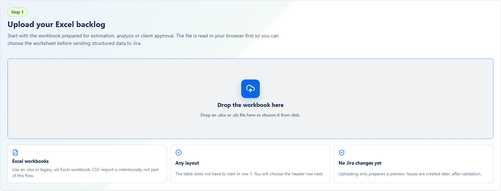
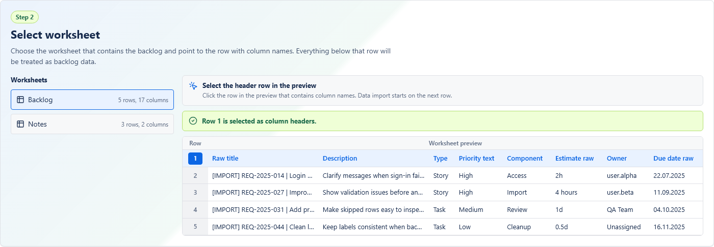
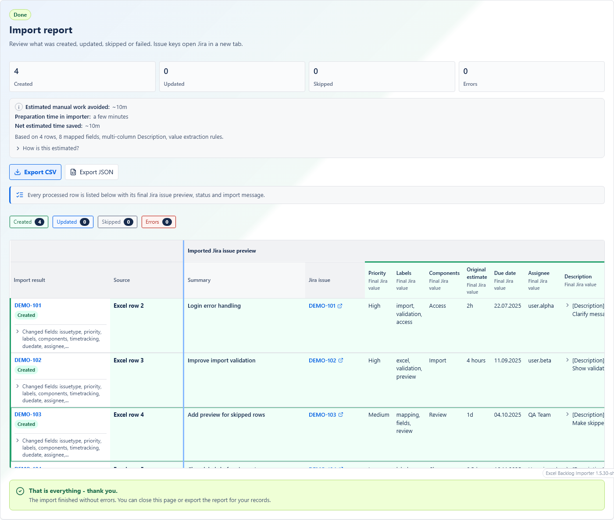
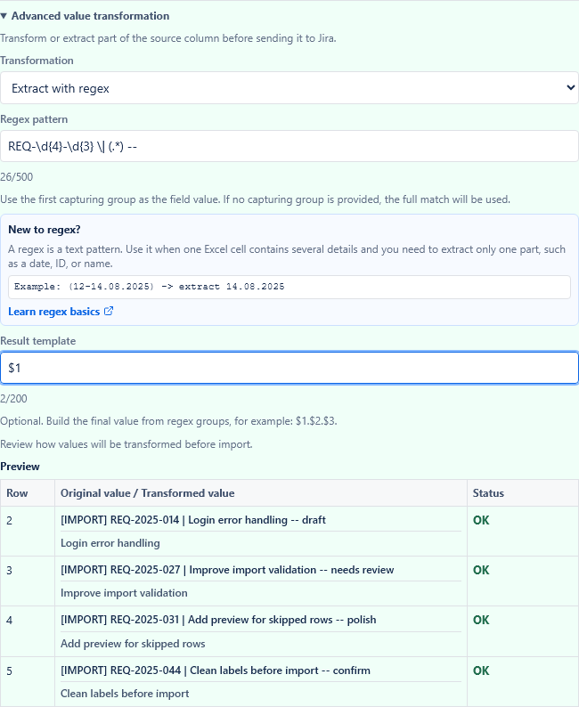

When to use the app
Use the app when you have backlog rows in Excel and want to turn them into Jira issues without copying each row by hand.
Typical examples include:
- a backlog prepared during discovery or estimation,
- a scope document shared by a client or stakeholder,
- a planning workbook maintained by a delivery team,
- a repeated upload where a newer version of the same workbook should add missing rows or update previously imported rows.
Before you start
Excel file
The app supports Excel workbooks in .xlsx and legacy .xls format.
Your workbook does not need to start in the first row. During setup, you choose which row contains the column names. Rows below that header row are treated as backlog data.
A good Excel file usually has:
- one row per Jira issue, unless you use the multi-column hierarchy option,
- a clear column for the Jira Summary,
- optional columns such as Description, Issue Type, Priority, Labels, Components, Due Date, Estimate, Story Points or Assignee,
- a stable ID column if you plan to import newer versions of the same workbook later.
Avoid merged cells, hidden formulas that produce unexpected values, and unclear duplicate column names. They can make mapping and validation harder to understand.
Jira project
Open the app from the Jira project where the issues should be created. The app detects that project and imports into it.
Before importing, check that the project has the issue types and fields you need. For example, if you plan to create Stories and Tasks, those issue types must be available in the project.
You also need normal Jira permissions for the actions you perform. If Jira does not allow you to create or edit issues, the import may fail even if the Excel setup is correct.
Basic import workflow
1. Upload your Excel file
Start by choosing an Excel workbook from your computer or dropping it into the upload area. The app reads the workbook in the browser first so you can choose the worksheet and review the structure before Jira changes are made.

2. Choose the worksheet
If the workbook contains more than one sheet, choose the sheet that contains the backlog. The app shows the sheet names and their row and column counts.
3. Confirm the header row
Click the row that contains the Excel column names. Data import starts from the row below the selected header row.

4. Review detected columns
The app shows the columns detected from the selected header row. You can use Auto-map common columns to let the app connect obvious column names, such as Summary, Description, Priority or Estimate. You can still change everything manually later.
5. Configure issue structure
Choose whether the import is flat or whether the app should build parent and child relationships. This step also contains the default issue type and optional default parent issue.

6. Map Excel columns to Jira fields
Choose which Excel column should fill each Jira field. Required Jira fields are marked with an asterisk. Unmapped optional fields are not sent to Jira.

7. Set repeated import behavior
Choose how the app should behave if the same workbook, or a newer version of it, is imported again. The safe default is to create only missing rows.
8. Validate rows
Click Validate. The app builds a preview of the Jira issues that will be created or updated. Rows with blocking errors cannot be imported until the data or mapping is fixed.
9. Run the import
Select the rows you want to import, then click the import button. Keep the page open while the import is running.
10. Check the import report
After the import finishes, the report shows created, updated, skipped and failed rows. Issue keys can be opened in Jira. You can also export the report as CSV or JSON.

Field mapping explained
Mapping means choosing which Excel column should be used for a Jira field. For example, you may map the Excel column Title to the Jira field Summary.
Required fields
Jira always requires a Summary. Your project may require other fields depending on the selected issue type. Required fields are marked with an asterisk in the mapping screen.
If a required value is missing, validation blocks that row before import.
Optional fields
Optional fields can be left unmapped. If a field is not mapped, the app does not send it to Jira.
If a mapped optional field is empty for one row, the app usually leaves that field empty for that row.
Default values
Defaults are used when the Excel row does not provide a value. The most important defaults are:
- Default issue type: used for rows that do not have an Issue Type column.
- Default Jira parent: used when imported rows should be created under the same existing Jira issue.
Supported field behavior
The app reads Jira project metadata and shows available fields. Common supported fields include Summary, Description, Issue Type, Priority, Labels, Components, Fix versions, Due date, Assignee, Original estimate and custom fields such as Story Points.
Some field types need values in a specific form:
- Labels can be separated by commas, semicolons or new lines.
- Components and versions should match existing Jira values, or Jira may reject them.
- User fields can use email, display name or Jira account ID. Multi-user fields can use comma, semicolon or new-line separated values.
- Sprint fields expect Jira sprint IDs, such as
12or12; 15. - Assets fields expect object identifiers, such as
workspaceId:objectIdorobjectId:123.
If the app marks a Jira field as unsupported, do not use that field for this import. Choose another field or ask your Jira administrator whether the field configuration can be simplified.
Issue types and hierarchy
The issue structure step decides how imported rows relate to each other or to existing Jira issues.
Flat imports
Use No hierarchy - import rows as separate issues when each Excel row should become one independent Jira issue. This is the simplest and safest option for many backlogs.
For flat imports, you can use one default issue type for all rows or map an Issue Type column if the workbook already contains Jira issue type names.
Default issue type
The default issue type is the fallback type used when the app cannot get an issue type from Excel. For example, if the default is Story, rows without an Issue Type value are created as Stories.
If you map an Issue Type column, values from Excel override the default row by row.
Default Jira parent
Use a default parent when all imported rows should be placed under the same existing Jira issue. The app searches existing Jira issues in the current project and lets you select one.
This is useful when you are importing work under one existing Epic, Initiative or parent issue, depending on how your Jira project is configured.
Existing Jira parent key per row
For flat imports, the advanced options allow a column with existing Jira parent keys, such as PROJ-123. Use this only when the Excel file already contains valid Jira issue keys from the current project.
Parent from an Excel column
Use Use parent from an Excel column when one Excel column says which row is the parent, and another column contains the value used to find that parent row.
For example, a row may have Parent ID = F-100, and another row may have Item ID = F-100. The app uses this relationship to create the parent before the child.
If more than one row matches the same parent reference, validation reports an ambiguous parent reference. Fix the Excel file or choose a more specific matching column.
Build hierarchy from multiple Excel columns
Use Build hierarchy from multiple Excel columns when the workbook stores each hierarchy level in a separate column, such as Epic, Story and Task.
The first selected hierarchy column becomes the top-level item. Each next selected column becomes a child level under the values before it.
The app de-duplicates repeated hierarchy paths. If the same full path appears again, the repeated source row is shown as skipped and no extra Jira issue is created for that duplicate path.
Empty hierarchy cells
If the sheet repeats the full hierarchy path on every row, choose the strict option. If the sheet is visually grouped and blank cells mean "same value as above", use the fill-down option.
Common hierarchy mistakes
- Choosing an issue type that Jira does not allow under the selected parent type.
- Leaving a middle hierarchy level empty while a lower level has a value.
- Using parent names that are not unique.
- Using parent keys from a different Jira project.
- Expecting the app to create a missing existing parent issue. Existing parent keys must already exist in Jira.
Description Builder
The Jira Description field can be mapped from one Excel column or built from several Excel columns.
Single column
Use Single column when one Excel column already contains the full description text you want to send to Jira.
Multiple columns
Use Multiple columns when important backlog context is spread across several Excel columns, such as Business Context, User Problem, Acceptance Criteria and Technical Notes.
The app creates a structured Jira Description with section headings based on the Excel column names. Empty cells are skipped.

Order matters
The order of sections in the builder is the order used in the Jira Description. Move sections up or down to make the final description readable.
Append unmapped columns
The app can append unmapped Excel columns to the Description. This is useful when the workbook contains useful context that does not deserve a separate Jira field.
Technical-looking columns such as issue key, import status, result or error columns are excluded from this automatic Description append behavior.
Advanced value transformation
Advanced value transformation lets you extract or reshape a value before it is sent to Jira. Use it only when the Excel cell contains more text than Jira should receive.
For example, a source cell may contain [IMPORT] REQ-2025-014 | Login error handling -- draft, but you only want the final Summary to be Login error handling.

Regex extraction in simple words
A regex is a text pattern. It can find a specific part of a longer text. The app uses the first captured part as the value unless you provide a result template.
If the pattern does not match a row, validation shows a warning or an error depending on whether the Jira field is required.
Result templates
A result template builds the final value from the captured parts of the pattern. Captured parts are referenced as $1, $2, $3 and so on.
Date parsing
For date fields, choose the input date format after extraction. Supported date formats in the UI include:
DD.MM.YYYYYYYY-MM-DDDD/MM/YYYYMM/DD/YYYY
Jira receives a normalized date after validation succeeds.
Date range example
Source value: (22-23.07.2025)
You can use one pattern to capture the first day, second day, month and year:
\((\d{2})-(\d{2})\.(\d{2})\.(\d{4})\)| Captured group | Meaning | Example value |
|---|---|---|
$1 |
First day | 22 |
$2 |
Second day | 23 |
$3 |
Month | 07 |
$4 |
Year | 2025 |
Start date template: $1.$3.$4, which gives 22.07.2025.
End date template: $2.$3.$4, which gives 23.07.2025.
Validation and preview
Validation is the last checkpoint before Jira changes. It checks the selected workbook rows, mapping, issue types, required fields, dates, numbers, estimates, user fields, parent relationships, duplicate handling and transformation results.
How to read validation results
The validation screen shows:
- how many rows are ready to import,
- how many rows are blocked by errors,
- how many rows are skipped,
- which rows will create new Jira issues,
- which rows will update existing Jira issues, when update mode is used,
- the final Jira field values that will be sent.
You can filter the table by added rows, updated rows, skipped rows, missing data and other errors. You can also select or clear individual importable rows.
Stale validation
If you change the file, sheet, mapping, hierarchy, issue type, parent, duplicate handling or estimate settings after validation, the preview becomes outdated. Validate again before importing.
Estimated manual work avoided
The validation and report screens may show a quiet estimate called Estimated manual work avoided. It is an approximate range based on the number of rows, mapped fields, hierarchy settings, Description Builder and value extraction rules.
Before import, this estimate does not subtract preparation time. After import, the report may also show approximate preparation time in the importer and net estimated time saved. Treat this as a practical guide, not an exact measurement.
Diagnostic JSON
The validation screen includes a subtle Diagnostic JSON link. Use it only if the app authors ask for diagnostic data while investigating a problem.
This JSON can contain values from the Excel file. Before sending it to the app authors, anonymize sensitive content. The creators of Mederak App do not have access to your data unless you send it yourself, for example by sharing the generated JSON.
Common validation messages
| Message or problem | What it means | How to fix it |
|---|---|---|
| Summary is required | The row has no final Summary value. | Map the correct Summary column or fill the missing Excel cell. |
| Issue type is not available | The issue type value does not exist in this Jira project. | Fix the Excel value or choose a valid default issue type. |
| Sub-task issue types require a parent | Jira does not allow a sub-task without a parent issue. | Select a default parent or map a valid parent column. |
| Invalid date format | The date cannot be parsed using the expected format. | Fix the Excel date or choose the correct transformation date format. |
| Regex does not match | The extraction pattern did not find a value in that row. | Adjust the pattern or fix the source cell. |
| Parent issue was not found | The parent key from Excel does not exist or is not available in the current project. | Correct the parent key or choose an existing parent from the project. |
| Duplicate hierarchy path | The same generated hierarchy path already appears in the preview. | Usually no action is needed. The repeated row is skipped so the app does not create a duplicate issue. |
Repeated imports and updates
Repeated import behavior controls what happens when the app finds rows that were imported before.
Record identity
A record identity is the value the app uses to recognize the same backlog item in a later import. The best option is a stable Excel ID column, such as Backlog ID or Request ID.
If you do not choose an identity column, the app generates an identity from mapped fields. Cross-import duplicate detection is scoped to the same Excel file name.
Import modes
| Mode | Use when | What to watch out for |
|---|---|---|
| Ignore duplicate checking | You want every valid selected row to create a new Jira issue. | The app will not check previously imported row identities. |
| Create only missing | You want the safe default for repeated uploads. | Previously imported rows are not updated. |
| Skip existing | You only want to add rows that have not been imported before. | Existing matching rows are skipped. |
| Update existing | You want to change only rows that already match previous imports. | No new missing issues are created. |
| Create missing and update existing | You want a newer workbook version to add new rows and update old ones. | Review mapped fields carefully, because update modes change only mapped fields. |
How the app decides create vs update
After import, the app stores row identity and file name metadata in Jira issue properties and Forge Storage. On later imports, it uses that stored identity to find previously imported issues.
Stored row identities are kept for 30 days and then pruned automatically.
Saved mapping templates
The app saves your setup automatically after a completed setup. When you upload a similar workbook later, it can suggest a matching template based on the sheet and column layout.

File names do not have to be identical. A workbook called v2, final or copy can still match if the structure is similar.
A saved mapping can include field mappings, Description Builder setup, value transformations, hierarchy settings, duplicate mode, estimate settings and source column headers. It does not store full Excel row data.
Always review the mapping after applying a template. Columns may have been renamed, removed or reused for a different meaning.
If a saved template refers to missing columns or missing required mappings, the app warns you before import.
Import report
The report shows what happened after import:
- issues created,
- issues updated,
- rows skipped,
- rows failed or blocked,
- Jira issue keys where available,
- row-level messages and final field values.
You can export the report as CSV or JSON for your own records or for support analysis.
Troubleshooting
My file was not read
Check that the file is an .xlsx or .xls workbook. If the workbook is very large, parsing may take longer in the browser.
The wrong row is used as the header
Go back to the worksheet selection step and click the row that contains the column names. Remember that import data starts below the selected header row.
A required Jira field is missing
Map the missing required field or fill the missing Excel values. Required fields can depend on the selected issue type.
Date validation fails
Check whether the Excel value matches the selected date format. If you use text extraction, confirm that the extracted value is the date itself, not the full source text.
Regex returns an empty value
Open the transformation preview. If the status is No match, the pattern does not match that row. If the status is Invalid result template, the template may refer to a group that does not exist.
The hierarchy does not look right
Check the selected hierarchy mode, selected level columns, issue types for each level and the empty-cell mode. If a child appears without a parent, the source row may be missing a higher-level value or the fill-down option may be incorrect.
Some rows are skipped
Skipped rows are usually intentional. For example, repeated hierarchy paths are skipped so the app does not create duplicate generated issues. Read the row message in the validation preview or report.
I do not see a Jira field I expected
The app reads fields available for the current Jira project and issue configuration. Some Jira fields may not be returned, may not be supported yet, or may require a different issue type or project setup.
The import failed
Read the row-level message in the report. Common causes include missing Jira permissions, Jira rejecting a field value, a field option that does not exist, a parent issue that cannot be used, or a required field that was not accepted by Jira.
If you contact the app authors, use the Diagnostic JSON only after anonymizing sensitive workbook data.
Jira says the Summary contains newline characters
The app normalizes Summary values by replacing line breaks with spaces before sending them to Jira. If you still see this error, check whether the field being sent is really the Summary field and export the diagnostic data for support review.
Best practices
- Start with a small test import before importing a large workbook.
- Keep one row per Jira issue unless you intentionally use hierarchy columns.
- Use clear column names.
- Use a stable ID column when you expect repeated imports.
- Avoid merged cells.
- Avoid hidden logic in Excel formulas where possible.
- Validate before importing and read row-level messages.
- Review mappings even when using a saved template.
- Use Description Builder for extra context instead of creating too many custom fields.
- Be careful with update modes. They change existing Jira issues.
- Export the report after important imports.
FAQ
Does uploading a workbook create Jira issues?
No. Uploading only prepares the file for review. Jira issues are created or updated only after validation and import.
Can I import only selected rows?
Yes. On the validation screen, select the importable rows you want to import. Rows with blocking errors cannot be selected for import.
Can the app update existing Jira issues?
Yes, when you use a repeated import mode that updates existing rows and the app can match those rows to previously imported issues.
Will update mode change every Jira field?
No. Update modes change only fields that are mapped in the current import setup.
Can I use formulas in Excel?
The app reads values from the workbook, but complex formulas can make results harder to predict. For important imports, use visible final values where possible.
What happens when a cell is empty?
If the field is optional, the app usually leaves it empty. If the field is required by Jira, validation blocks that row.
Why does the app show an estimated manual work avoided value?
It gives a rough, conservative estimate of the manual Jira work the import is likely avoiding. It is not an exact measurement and should not be treated as guaranteed time savings.
Glossary
- Workbook
- An Excel file. A workbook can contain one or more sheets.
- Sheet
- A tab inside an Excel workbook.
- Header row
- The Excel row that contains column names, such as Summary, Description or Priority.
- Mapping
- The connection between an Excel column and a Jira field.
- Jira field
- A piece of information on a Jira issue, such as Summary, Description, Priority or Due date.
- Issue type
- The Jira type of work item, such as Story, Task, Bug, Epic or Sub-task. Available types depend on the Jira project.
- Parent
- An issue that contains or groups another issue. Jira parent rules depend on project configuration.
- Epic
- A larger Jira work item that often groups Stories or Tasks. Exact behavior depends on the Jira project.
- Story
- A Jira issue type often used for user-facing work or product backlog items.
- Sub-task
- A Jira issue type that must have a parent issue.
- Regex
- A text pattern used to extract part of a longer value. Use it carefully and check the preview.
- Validation
- The check that happens before import. It shows which rows are ready, blocked or skipped.